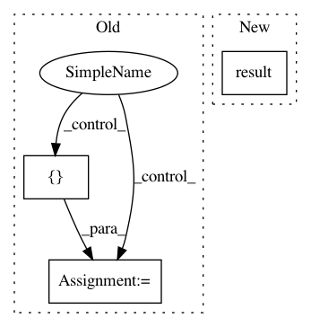

5f9be68993f6f1809804ac373db9d6fb7f397d0f,opennmt/tests/sequence_tagger_test.py,SequenceTaggerTest,_testTagSchemeFlags,#SequenceTaggerTest#Any#Any#Any#Any#Any#Any#,11
Before Change
with tf.Session() as sess:
sess.run(tf.local_variables_initializer())
true_positives, false_positives, false_negatives = sess.run([
true_positives, false_positives, false_negatives])
self.assertEqual(expected_true_positives, true_positives, msg="true positives mismatch")
self.assertEqual(expected_false_positives, false_positives, msg="false positives mismatch")
self.assertEqual(expected_false_negatives, false_negatives, msg="false negatives mismatch")
After Change
false_negatives.update_state(gold_flags, predicted_flags)
tp = self.evaluate(true_positives.result())
fp = self.evaluate(false_positives.result())
fn = self.evaluate(false_negatives.result())
self.assertEqual(expected_true_positives, tp, msg="true positives mismatch")
In pattern: SUPERPATTERN
Frequency: 3
Non-data size: 3
Instances
Project Name: OpenNMT/OpenNMT-tf
Commit Name: 5f9be68993f6f1809804ac373db9d6fb7f397d0f
Time: 2019-04-01
Author: guillaume.klein@systrangroup.com
File Name: opennmt/tests/sequence_tagger_test.py
Class Name: SequenceTaggerTest
Method Name: _testTagSchemeFlags
Project Name: snipsco/snips-nlu
Commit Name: 42c25477366f3e4c1381ee40e2d77076a3c357e6
Time: 2017-03-24
Author: adrien.ball@snips.net
File Name: snips_nlu/intent_parser/builtin_intent_parser.py
Class Name: BuiltinIntentParser
Method Name: _parse
Project Name: mathics/Mathics
Commit Name: 2d860d3bb02b904bd8f482be76f253d0e26cafb4
Time: 2016-09-15
Author: Bernhard.Liebl@gmx.org
File Name: mathics/builtin/image.py
Class Name: DominantColors
Method Name: apply